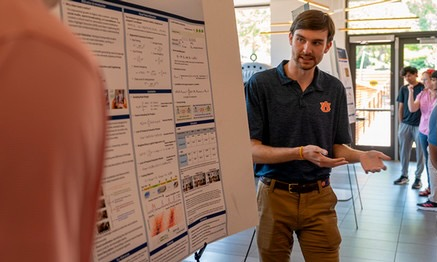

About Me
I am a recent graduate of electrical engineering from the Samual Ginn College of Engineering at Auburn University based in Opelika, AL. I am also a pianist and musician of nearly 17 years.
In the engineering field during my undergraduate studies, I developed a deep passion for several topics that crossover with my existing experience in the musical world including digital signal and image processing, data collection and processing, and analog and mixed-signal circuit design.
Technical Skills
- Languages:MATLAB, Python, C/C++
- Libraries & Frameworks: Pandas, NumPy, SciPy, Kivy, PySide6
- Audio & Production: Ableton Live, studio mixing workflows, synthesizers
- Hardware: STM32 Embedded Systems, Sensor Integration
Let's Connect
I am currently seeking opportunities in electrical engineering, primarily in the areas of signal processing, radar systems, sports technology, and audio technology. Feel free to reach out if you would like to collaborate or discuss engineering roles!